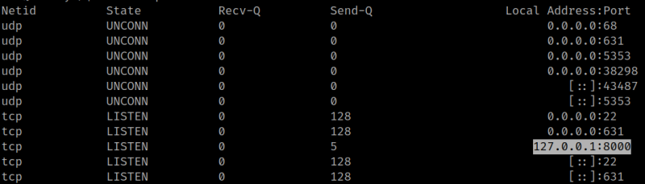
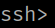
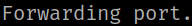
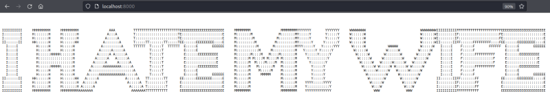

4.4 Get user dad
1. Enumerate the connections on the system.
mum@family:/$ ss -ntlup
Output:

SSH Port forwarding
Start port forwarding over an *existing* SSH connection instead of creating a new one.
This tip is for when you have an existing SSH session running but forgot to start port forwarding over the connection. Typically, people would close the connection and create a new one. However there is an alternative.
On your existing connection, simply type <enter>~C to bring up a console with your local SSH client (not the server). The provided console accepts a few of the ssh commands options, including -R, -L.
So, for example, if I wanted to suddenly access some service running on port 4321 on my local machine from the server, I could type <enter>~C-R 1234:localhost:4321<enter> and I would immediately have access to that resource from the server on localhost:4321 (that's the server's localhost).
~ (tilde) is the SSH's default EscapeChar. You press <enter> first to clear the buffer, the ~ escape char and any one of a number of options.
For example, the full list of options that the client of my version of OpenSSH supports is (gotten with <enter>~?):
Supported escape sequences:
~. - terminate connection (and any multiplexed sessions)
~B - send a BREAK to the remote system
~C - open a command line
~R - Request rekey (SSH protocol 2 only)
~^Z - suspend ssh
~# - list forwarded connections
~& - background ssh (when waiting for connections to terminate)
~? - this message
~~ - send the escape character by typing it twice
1. Run the following command on the victim's shell.
mum@family:/home/dad/survey$ <~+C>
Output:

2. When you get the “ssh>” prompt add the following code.
-L 8000:localhost:8000
Output:

Note
If you get “bind [::1]:8000: Address already in use channel_setup_fwd_listener_tcpip: cannot listen to port: 8000 Port forwarding failed.” you must run on your Kali Machine the following command.
$ lsof -i :8000You'll see the proccess running on the port 8000. Kill the proccess.
3. Navigate to http://localhost:8000.
